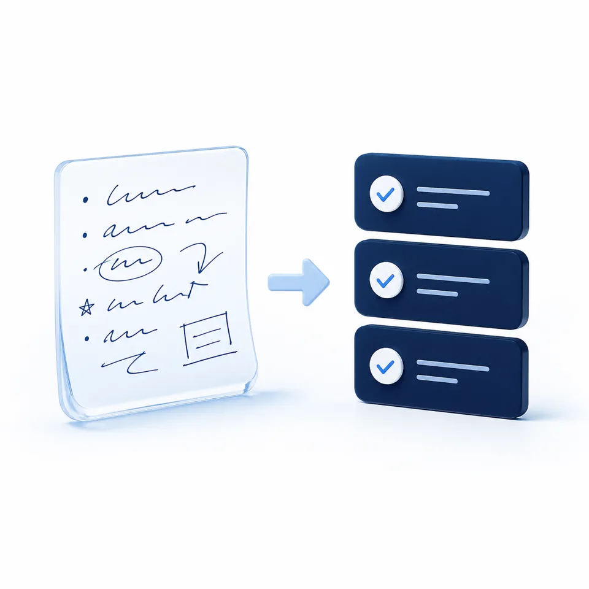

- 운영체제와 버전, 저장 공간, 인터넷 연결
- Telegram, Chrome, Obsidian 설치 여부
- 회사 관리 기기나 관리자 권한 제한 여부
- 설치가 어려우면 수업 전 개인 카카오로 상담
남는 결과오늘 사용할 수 있는 환경과 지원 범위를 확인합니다.
동탄 / 소수정예 / 초보자 실습
코딩을 몰라도 괜찮습니다. Hermes를 텔레그램에서 실행하고, 내 자료를 다시 꺼내 쓰는 LLM Wiki까지 직접 연결합니다.
정확한 수업 공간과 신청 확정 절차는 개인 카카오로 안내합니다.
수업 후 남는 것
설명만 듣지 않고, 개인 노트북에서 확인한 상태를 기준으로 다음 행동까지 정합니다.
Desktop App 실행과 기본 상태를 확인합니다.
확인: 내 노트북에서 테스트 요청 1회허용한 내 계정에서 Hermes 응답을 받습니다.
확인: 테스트 메시지 1회와 응답 1회원자료와 정리 페이지를 담을 Vault를 만듭니다.
확인: raw, pages, prompts 구조자료를 저장하고 다시 찾아 쓰는 흐름을 실행합니다.
확인: 원자료 1개와 활용 결과 1개실제 사용 사례
기존 브랜드 자산으로 보여주는 대표 활용 예시입니다. 수업에서는 개인 자료 대신 안전한 샘플부터 사용합니다.
AI에게 질문하고, 답을 채팅창에 남긴 채 끝납니다.
내 자료를 저장하고, 텔레그램으로 다시 요청해 결과를 비교합니다.
원자료와 생성 결과를 사람이 직접 열어 보고 다음 변경을 정합니다.

3시간 커리큘럼
닫힌 상태에서도 시간, 목표, 남는 결과를 확인할 수 있습니다. JavaScript가 꺼져도 모든 내용이 보입니다.
남는 결과오늘 사용할 수 있는 환경과 지원 범위를 확인합니다.
남는 결과실행되는 Hermes Desktop, Telegram 테스트 응답, 오류 메모
남는 결과원자료 1개, 정리 페이지 1개, Hermes 활용 결과 1개
추천 대상과 준비
개인 노트북과 충전기, ChatGPT Plus 이상, Telegram 계정과 PC 앱, Google 계정과 Chrome, Obsidian
설치가 어려우면 수업 전에 알려주세요. 비밀번호·토큰·결제정보는 강사가 받거나 대신 입력하지 않습니다.
운영 방식과 안전
AI 빌더스 랩은 도구를 대신 조작하는 대행이 아니라, 빌더가 직접 실행하고 판단하는 연습을 돕습니다.
Plan을 먼저 읽고 사람이 승인합니다.
비밀번호·토큰·API 키는 본인이 공식 입력란에 직접 입력합니다.
삭제·대량 변경·외부 발송·결제는 실행 전 멈추고 확인합니다.
테스트 입력과 실제 자료를 분리합니다.
결과를 직접 열고 예상과 비교한 뒤 다음 변경을 정합니다.
공개 후기와 수강생 수를 임의로 만들지 않습니다. 확인 가능한 운영 정보와 수업 결과만 안내합니다.
일정·장소·정책
최신 확정 일정은 개인 카카오로 안내하고, 아래 달력은 저장소에 포함된 공개 스냅샷을 보여줍니다.
정확한 장소, 주차, 신청 확정, 취소·환불·노쇼 기준은 일정과 함께 신청 전 개인 카카오로 확인합니다.
assets/google-calendar.ics 기준
저장된 일정 스냅샷을 불러오는 중입니다.
공개 스냅샷이 오래되었거나 읽히지 않으면 최신 일정은 개인 카카오로 확인해주세요.
자주 묻는 질문
네. 코딩보다 설치와 실행 결과를 먼저 확인하는 입문 실습입니다. 수업 전 사용 환경을 개인 카카오로 확인합니다.
코딩을 몰라도 참여할 수 있습니다. 원하는 결과를 정하고, Plan을 읽고, 직접 실행하고, 결과를 비교하는 순서로 진행합니다.
공식 설치 경로와 운영체제별 상태를 수업 전에 확인합니다. 회사 기기처럼 설치 권한이 제한된 경우에는 신청 전에 상담해주세요.
수업은 ChatGPT Plus 이상 환경을 기준으로 합니다. 무료 계정은 기능 차이가 있으므로 신청 전에 개인 카카오로 확인해주세요.
네. 개인 노트북과 충전기를 가져와 직접 설치하고 실행합니다.
오류 메시지를 기록하고 안전한 범위에서 원인을 확인합니다. 수업 전 설치가 어려우면 개인 카카오로 먼저 알려주세요.
회사 보안 정책과 관리자 권한에 따라 달라집니다. 설치가 허용되는지 신청 전에 확인해주세요.
아니요. 비밀번호·토큰·API 키는 본인이 공식 입력란에 직접 입력하며, 채팅이나 공개 문서에 붙여넣지 않습니다.
동탄에서 진행하며, 정확한 공간과 주차 안내는 일정 확정 전에 개인 카카오로 안내합니다.
개인 카카오로 가능한 일정을 확인한 뒤 운영자가 참여 가능 여부와 준비사항을 안내합니다.
정확한 기준은 신청 전 개인 카카오에서 일정과 함께 확인합니다.
수업 후 필요한 지원 범위와 방법은 신청 전에 개인 카카오로 문의해주세요.
다음 행동
동탄 / 3시간 / 20,000원 / 최대 3명 / 개인 노트북 지참